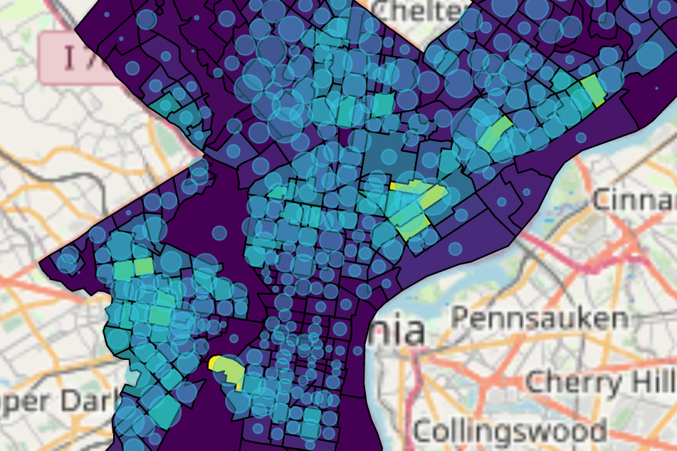
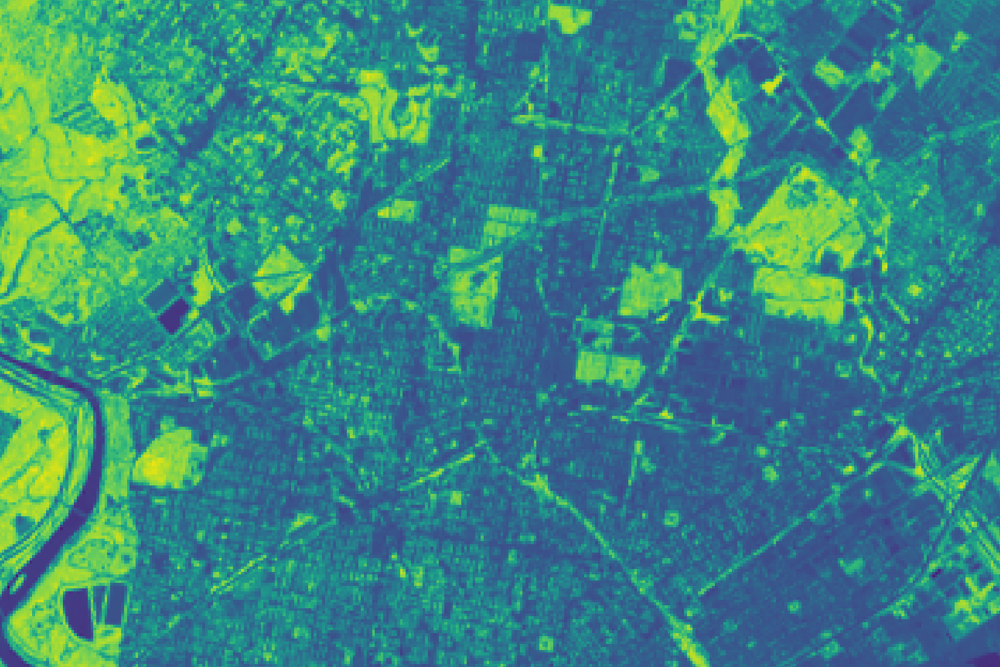
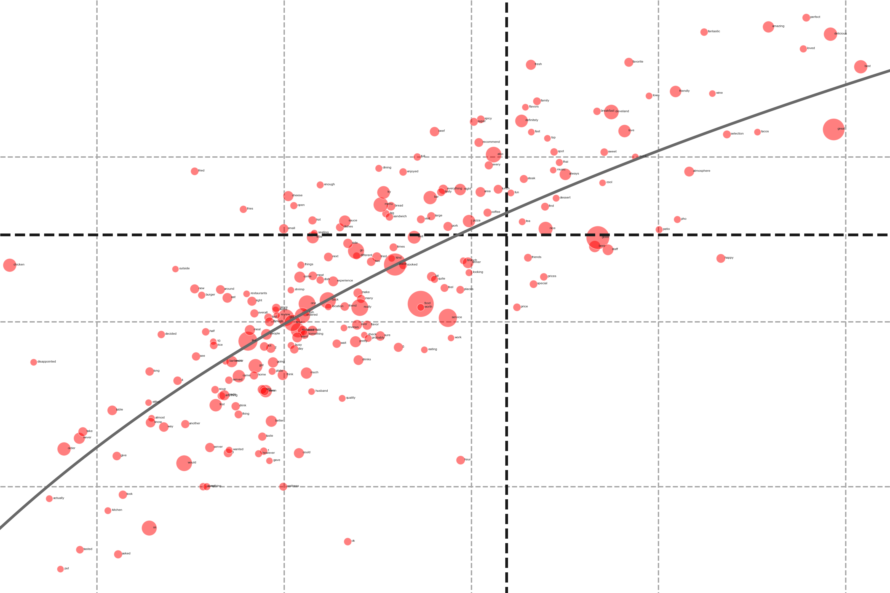
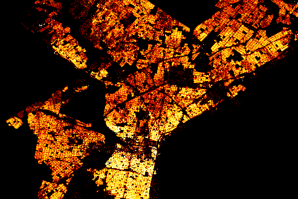
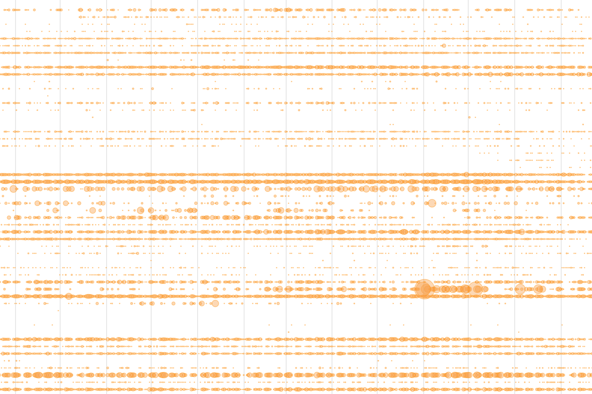

Street View Analytics
Street qualities will greatly
impact the safety and equity of the community living there. The project aims to
proactively, using street view analysis, explore the relationships between "street
space" and "safety" / "equity".

Evictions & Code Violations
Understanding the eviction can effectively address social
problems, from poverty to education. This project aims to research the correlation
between eviction and code violation to verify the above assumption.

Normalized Difference Vegetation Index (NDVI)
This project aims to research the NDVI within Philly and
compare the difference of it among different Philly urban areas. So that we can see if
the inequity of greening resources exists in Philadelphia.

Yelp Reviews Exploration
Are we objective when reviewing restaurants? What is the
objective extent? This project aims to use machine learning to research Yelp restaurant
reviews, and
analyzed correlations between restaurant reviews and census data.
Craigslist Web Scrapping
Different from obtaining an existing data set, this project
aims to extract property information(including price, and amenities) on apartments from
Craigslist search results, from the HTML text, to get the live and authentic market
information.

Real Estate Transfer
Can we understand the real estate market of Philadelphia
through the real estate transfer? This project aims to visualize real estate transfer
cases from 2000 to nowadays, in this way to have a better understanding of the market
change.

DOB Complaints
How do residents feel living in NYC? This project aims to
visualize the DOB Complaints in NYC before 2020. We will see the difference in compliant
numbers in different areas, the top complaint types, and their change over time.